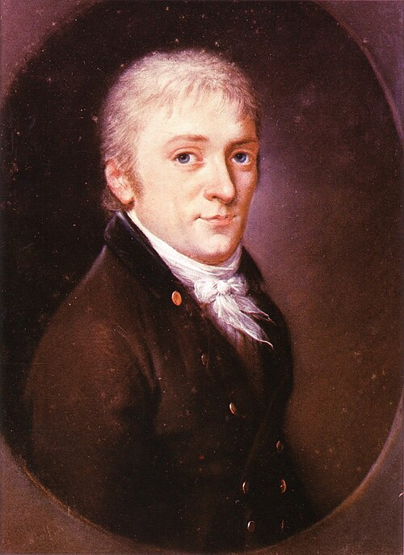

Si traccia a caso una corda in un cerchio. Probabilità che sia più lunga del lato del triangolo inscritto?
11/4
21/3
31/2
4dipende da come si sceglie la corda
Inquadra il QR · voto anonimo, uno per telefono · votate d'istinto
Tre modi di scegliere
Tre modi, tre nuvole di corde
Sondaggio · rivelazione (V)
Si traccia a caso una corda in un cerchio. Probabilità che sia più lunga del lato del triangolo inscritto?
11/4
21/3
31/2
4dipende da come si sceglie la corda
«Aucune des trois n'est fausse, aucune n'est exacte, la question est mal posée.»«Nessuna delle tre è falsa, nessuna è esatta: la domanda è mal posta.» — J. Bertrand, 1889, p. 5
Nel continuo «a caso» non basta: bisogna dire come è distribuita la probabilità.
Variabili aleatorie continue
Finora: variabili aleatorie discrete. Ma molti fenomeni vanno codificati in una variabile a valori continui.
Quando passa l'autobus, dopo le 14:00?
Intervalli di 5 minuti: $P(15\lt T\le 20)$ è una barra.
Intervalli di 2,5 minuti: $P(15\lt T\le17{,}5)+P(17{,}5\lt T\le20)$, due barre.
E tra le 14:12 e le 14:13? Tra le 14:12:00 e le 14:14:36? Stringiamo ancora…
Più strette, più basse. Rimedio: altezza $=\dfrac{\text{probabilità}}{\text{larghezza}}$, la probabilità per minuto.
Intervalli infinitesimi: una curva, la funzione di densità $f(t)$. La probabilità è l'area.
La funzione di densità di probabilità
La funzione di massa, che era «a stratti», diventa una curva: la funzione di densità (PDF, probability density function). Cambia la notazione: $f$ minuscola, $f_X(x)$. Cambia anche il concetto.
Valutata in un punto, $f(x)$ non restituisce la probabilità che $X$ valga $x$, ma la «derivata della probabilità» attorno a $x$.
È una probabilità per unità di misura: diventa una probabilità solo moltiplicata per una larghezza.
Per le v.a. continue parleremo sempre di probabilità che la variabile cada in un intervallo.
La probabilità è un'area
$$P(a\lt X\lt b)=\int_{x=a}^{b}\boxed{f(x)}\,dx$$
l'integrale tra $a$ e $b$: l'area sotto la densità, che abbiamo racchiuso nel riquadro
Ha senso disquisire se nella formula va il «minore» o il «minore o uguale»? No: un punto non ha area.
Funzione di densità · proprietà
Ricordiamoci gli assiomi
Prima: la somma delle probabilità sul dominio valeva 1. Adesso: l'integrale della densità su tutto il dominio vale 1.
Mai negativaun'area negativa sarebbe una probabilità negativa$f(x)\ge0$
Ogni area è una probabilitàtra due valori qualsiasi$0\le\displaystyle\int_{a}^{b}f(x)\,dx\le1$
L'area totale vale 1anche se i valori possibili arrivano all'infinito$\displaystyle\int_{-\infty}^{+\infty}f(x)\,dx=1$
Attenzione: $f(x)$ può superare 1. Un tempo uniforme tra 0 e 0,5 minuti ha densità 2: base 0,5, area 1.
Sondaggio · rivelazione subito (V)
La densità di una v.a. continua $X$ vale $f(2)=3$. Che cosa possiamo dire?
1è un errore: una probabilità non supera 1
2P(X = 2) = 3
3P(2 < X < 2,01) ≈ 0,03
4P(X ≤ 2) = 3
Inquadra il QR · voto anonimo, uno per telefono
Densità · interpretazione alternativa
I valori di $f$ non sono probabilità. Ma dove $f$ è alta, un intervallo di una certa larghezza contiene più probabilità di un intervallo della stessa larghezza dove $f$ è bassa.
Variabile aleatoria con distribuzione uniforme
$X\sim\operatorname{Uni}(a,b)$ prende valori tra un limite inferiore $a$ e uno superiore $b$, senza preferenze: la densità è costante.
I generatori di numeri pseudocasuali partono da qui: random.random() dà $\operatorname{Uni}(0,1)$; con $a+(b-a)\cdot U$ si ottiene $\operatorname{Uni}(a,b)$.
V.a. uniforme · l'autobus
Se l'autobus passa in un istante qualsiasi tra le 14:00 e le 14:30, senza preferenze:
$T\sim\operatorname{Uni}(\alpha=0,\ \beta=30)$
Alle 14:00: probabilità che passi tra le 14:15 e le 14:20?
Probabilità che una variabile sia minore, maggiore, minore o uguale di un certo numero: comodo avere una formula senza sommatorie (discrete) né integrali (continue).
La funzione di ripartizione $F$ (maiuscola; in inglese CDF) codifica la probabilità che la variabile assuma valori minori o uguali a un certo valore:
$$F(x)=P(X\le x)=\sum_{k\le x}p(k)$$
v.a. discrete dove $p$ è la PMF
$$F(x)=P(X\le x)=\int_{t=-\infty}^{t=x}f(t)\,dt$$
v.a. continue dove $f$ è la PDF
La vera utilità: per le distribuzioni note la formula di $F$ è già pronta da usare negli esercizi.
Inquadra il QR · voto anonimo · risultato immediato
Variabile aleatoria esponenziale
La distribuzione di Poisson conta le occorrenze di un evento in un intervallo: occorrenze indipendenti, valore atteso noto. Se invece ci chiediamo quanto tempo passa prima della prossima occorrenza, abbiamo una v.a. esponenziale: una v.a. continua.
a
Numero di attacchi a un sito web nel prossimo giorno → Poisson
Tempo tra due attacchi → esponenziale
b
Numero di operazioni sul database di Uber nei prossimi 10 ms → Poisson
Tempo fino alla prossima operazione → esponenziale
c
Numero di utenti che cliccano su un annuncio nei prossimi 5 minuti → Poisson
Tempo trascorso tra due clic → esponenziale
Il tempo di attesa
Zero lavori = attesa lunga
$T>0{,}5\iff$ zero lavori in mezz'ora
distribuzione di Poisson, media $3\cdot0{,}5=1{,}5$
$\lambda$ = eventi per unità di tempo. Eventi in media ogni mezzo minuto: $\mathbb{E}[X]=0{,}5$ min e $\lambda=2$ al minuto.
La forma di un'attesa
Prevedi, poi muovi $\lambda$
Prova:
Esempio · Baron, Esempio 4.5
A una stampante arrivano lavori con un tasso medio di 3 all'ora, in modo indipendente.
Qual è il tempo atteso tra un lavoro e il successivo?
Qual è la probabilità che il prossimo lavoro arrivi entro 5 minuti?
$T\sim\operatorname{Exp}(\lambda=3\ \text{all'ora})\qquad\mathbb{E}[T]=\tfrac13$ h $=20$ min
Stessa unità: 5 min $=\tfrac1{12}$ h $\;\Rightarrow\; F\!\left(\tfrac1{12}\right)=1-e^{-3\cdot\frac1{12}}=1-e^{-0{,}25}\approx\color{#38ef7d}{0{,}221}$
$1-e^{-3\cdot5}$ mescola ore e minuti: direbbe «quasi certo», con un'attesa media di 20 minuti!
Proprietà di mancanza di memoria
Una v.a. $X\ge0$ gode della proprietà di mancanza di memoria se, per ogni $t,u\gt0$:
(1) già atteso $t$: altri $u$?
$$P(X>t+u\mid X>t)=P(X>u)$$
probabilità condizionata; se $X$ supera $t+u$, supera anche $t$
Se $X$ è un tempo di attesa: la probabilità che sia maggiore di $t+u$, sapendo che è maggiore di $t$, non dipende da quanto si è già atteso, cioè da $t$.
L'analogo continuo della distribuzione geometrica, ed è l'unica distribuzione continua senza memoria.
Sondaggio · calcolatelo a coppie
Il signor Rossi pensa che la durata di un'auto, in migliaia di km, sia esponenziale di parametro 1/20. Compra un'auto che ha già fatto 10 000 km. Probabilità che ne percorra altri 20 000?
1e^(−1,5) ≈ 0,22
2e^(−1) ≈ 0,37
3e^(−0,5) ≈ 0,61
4non si può dire senza sapere quanto è vecchia l'auto
Inquadra il QR · voto anonimo, uno per telefono
Sondaggio · rivelazione (V)
$X$ = durata (migliaia di km), $\;X\sim\operatorname{Exp}(\lambda=\tfrac1{20})$
Per la mancanza di memoria: $P(X\gt30\mid X\gt10)=P(X\gt20)=S(20)=e^{-1}\approx\color{#38ef7d}{0{,}37}$
Un'auto vera si usura: ha memoria. Il conto è giusto, il modello forse no.
Esercizi · a coppie
Il numero di anni di funzionamento di una radio ha distribuzione esponenziale di parametro $\lambda=1/8$. Qual è la probabilità che una radio funzioni per più di dieci anni?
Il tempo (in ore) necessario per riparare un macchinario è una v.a. esponenziale di parametro $\lambda=1$. Qual è la probabilità che la riparazione superi le due ore? Qual è la probabilità che richieda almeno tre ore, sapendo che ne richiede più di due?
Esercizi · soluzioni
La radio
$Y$ = anni di funzionamento, $\;Y\sim\operatorname{Exp}(\lambda=\tfrac18)$
Misuri 100 volte la stessa distanza con uno strumento buono. Come si distribuiscono gli errori?
1tutti ugualmente probabili, entro un limite
2molti piccoli, pochi grandi, simmetrici
3soprattutto grandi, in eccesso o in difetto
4piccoli in un solo verso, mai negativi
Inquadra il QR · voto anonimo · pensate al vostro righello
La curva degli errori

C. F. Gauss nel 1803 pastello di J. C. A. Schwartz
ottobre 1801 · Gauss, 24 anni, calcola l'orbita
7 dicembre 1801 · von Zach la ritrova
«la media aritmetica […] fornisce il valore più probabile»Gauss, Theoria motus, 1809, art. 177
Sondaggio · rivelazione (V)
Misuri 100 volte la stessa distanza con uno strumento buono. Come si distribuiscono gli errori?
1tutti ugualmente probabili, entro un limite
2molti piccoli, pochi grandi, simmetrici
3soprattutto grandi, in eccesso o in difetto
4piccoli in un solo verso, mai negativi
Distribuzione normale o gaussiana
Gauss studiò la distribuzione degli errori di misura: pur essendo casuali, tendono a distribuirsi in modo simmetrico attorno al valore corretto. Oggi la chiamiamo distribuzione normale, o di Gauss.
È una distribuzione continua: può assumere qualsiasi valore reale. Ha una forma a campana simmetrica, con la cima al centro e le code che si estendono verso l'infinito da entrambi i lati.
Descrive bene le grandezze che si concentrano attorno a un valore medio: l'altezza delle persone, il peso dei cani, la temperatura media di una città, la somma di tanti piccoli errori.
«Tutti ci credono: gli sperimentatori perché pensano che sia un teorema di matematica, i matematici perché pensano che sia un fatto sperimentale.»G. Lippmann, riferito da H. Poincaré, Calcul des probabilités
Distribuzione normale · i parametri
La distribuzione normale dipende da due parametri: il valore atteso $\mu$ e la varianza $\sigma^2$.
$X\sim\mathcal{N}(\mu,\sigma^2)$
La «N» sta per «normale». Attenzione: molti testi e librerie scrivono $\mathcal{N}(\mu,\sigma)$, con la deviazione standard al secondo posto. Per non sbagliare scriviamo sempre il nome: $\mathcal{N}(\mu=170,\ \sigma=10)$.
L'altezza degli esseri umani è approssimativamente normale, con media 170 cm e deviazione standard 10 cm: la maggior parte delle persone è alta tra 160 e 180 cm.
Distribuzione normale · densità e funzione di ripartizione
Quattro normali: a sinistra la densità $\varphi_{\mu,\sigma^2}(x)$, a destra la funzione di ripartizione $\Phi_{\mu,\sigma^2}(x)$.
$\mu_1\lt\mu_2\lt\mu_3$, stessa $\sigma$: $\mu$ è la posizione del vertice, la campana trasla senza deformarsi.
$\sigma_1\lt\sigma_2\lt\sigma_3$, stessa $\mu$: $\sigma$ è la larghezza; l'area resta 1, quindi allargandosi la campana si abbassa.
Supponiamo che l'altezza degli esseri umani sia approssimativamente normale, con media 170 cm e deviazione standard 10 cm. Qual è la probabilità che una persona scelta a caso sia più alta di 180 cm?
Questo integrale non ha una soluzione in forma chiusa: va risolto con il calcolo numerico. E vale in generale: la funzione di ripartizione della normale non è esprimibile in forma chiusa!
Funzione di ripartizione della normale standard
I valori di $\Phi(z)$ sono calcolati con grande precisione dai computer e raccolti in una tabella: la tabella Z.
Portatela all'esame!
Riga: unità e primo decimale di $z$. Colonna: secondo decimale. All'incrocio: $\Phi(z)$.
$\Phi(1{,}31)=\color{#38ef7d}{0{,}9049}$
Solo $z\ge0$. Per i negativi, la simmetria:
$$\Phi(-z)=1-\Phi(z)$$
$z$
0,00
0,01
0,02
0,03
0,04
0,05
0,06
0,07
0,08
0,09
0,0
0,5000
0,5040
0,5080
0,5120
0,5160
0,5199
0,5239
0,5279
0,5319
0,5359
0,1
0,5398
0,5438
0,5478
0,5517
0,5557
0,5596
0,5636
0,5675
0,5714
0,5753
0,2
0,5793
0,5832
0,5871
0,5910
0,5948
0,5987
0,6026
0,6064
0,6103
0,6141
0,3
0,6179
0,6217
0,6255
0,6293
0,6331
0,6368
0,6406
0,6443
0,6480
0,6517
0,4
0,6554
0,6591
0,6628
0,6664
0,6700
0,6736
0,6772
0,6808
0,6844
0,6879
0,5
0,6915
0,6950
0,6985
0,7019
0,7054
0,7088
0,7123
0,7157
0,7190
0,7224
0,6
0,7257
0,7291
0,7324
0,7357
0,7389
0,7422
0,7454
0,7486
0,7517
0,7549
0,7
0,7580
0,7611
0,7642
0,7673
0,7704
0,7734
0,7764
0,7794
0,7823
0,7852
0,8
0,7881
0,7910
0,7939
0,7967
0,7995
0,8023
0,8051
0,8078
0,8106
0,8133
0,9
0,8159
0,8186
0,8212
0,8238
0,8264
0,8289
0,8315
0,8340
0,8365
0,8389
1,0
0,8413
0,8438
0,8461
0,8485
0,8508
0,8531
0,8554
0,8577
0,8599
0,8621
1,1
0,8643
0,8665
0,8686
0,8708
0,8729
0,8749
0,8770
0,8790
0,8810
0,8830
1,2
0,8849
0,8869
0,8888
0,8907
0,8925
0,8944
0,8962
0,8980
0,8997
0,9015
1,3
0,9032
0,9049
0,9066
0,9082
0,9099
0,9115
0,9131
0,9147
0,9162
0,9177
1,4
0,9192
0,9207
0,9222
0,9236
0,9251
0,9265
0,9279
0,9292
0,9306
0,9319
Variabile aleatoria normale · linearità
Una combinazione lineare di una v.a. normale è ancora normale:
se $\;X\sim\mathcal{N}(\mu,\sigma^2)\;$ e $\;Y=aX+b$
Il reddito medio delle famiglie di un paese è di 900 monete, con deviazione standard di 200 monete. Supponiamo che i redditi seguano una distribuzione normale.
Quale frazione delle famiglie appartiene alla «classe media», cioè ha un reddito tra 600 e 1200 monete?
Latenza normale, $\mu=200$ ms, $\sigma=20$ ms. Arriva una richiesta da 300 ms. Che cosa pensi?
1normale amministrazione
2insolita, capita circa una volta su cento
3con questo modello quasi impossibile: forse il modello è sbagliato
4impossibile, è un errore di misura
Sondaggio · rivelazione (V)
$\mu=200$, $\sigma=20$: una richiesta da 300 ms?
1normale amministrazione
2insolita, circa una volta su cento
3quasi impossibile: forse il modello è sbagliato
4impossibile, è un errore di misura
$z=5$: circa 3 su 10 milioniguarda i percentili dei dati
Controllo comprensione
Come va con la regola 68–95–99,7?
1Ho capito e saprei rifarlo
2Ho capito a metà / ho dubbi
3Mi sono perso
Inquadra il QR · voto anonimo · risultato immediato
Domanda d'uscita
Un benchmark: media 120 ms, $\sigma=3$ ms. Oggi: 135 ms. Che cosa scrivi nel ticket?
$z=(135-120)/3=5$: cerca la causa, non è «sfortuna»
A casa: dispensa, Atti VI–VII · esercizi 5–8 · laboratorio «la campana nasce dagli errori» Settimana 9: perché le somme di tanti piccoli errori diventano campane